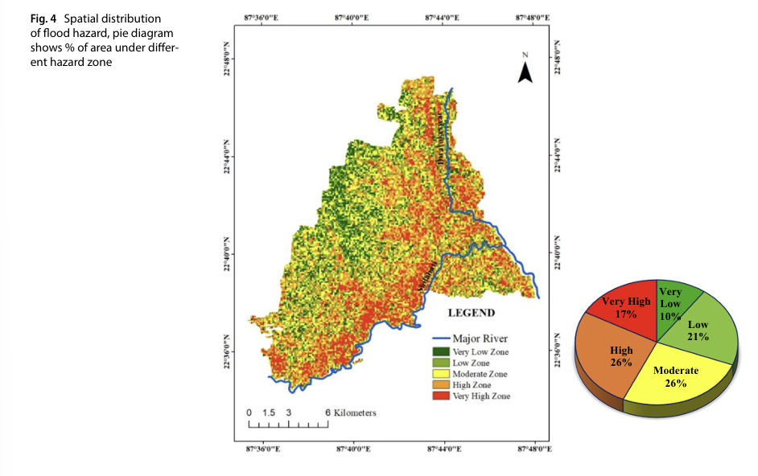
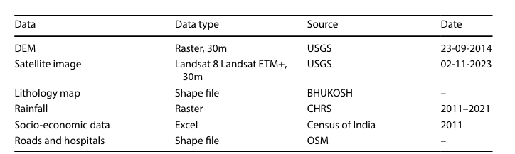
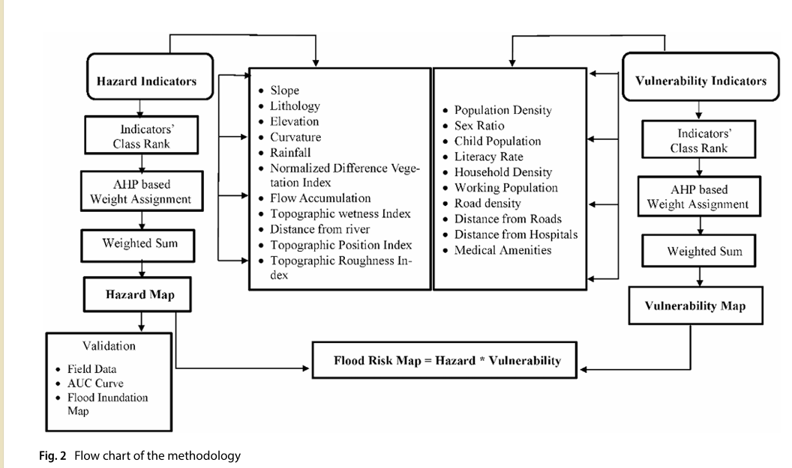

What is Multi-Criteria Analysis (MCA)?
Multi-criteria analysis (MCA) is an evaluative approach to handling geospatial problems using contrasting multiple different criteria, goals, and perspectives on an issue in order to assist with the decision-making process. In more simple terms: to assist in choosing the correct solution to implement for a specific (usually geo-spatial) problem, MCA can provide different viewpoints and weigh out the pros and cons of each potential solution. It helps gain a more holistic and realistic overview of complex issues – particularly when used in combination with Geographical Information Systems (GIS). GIS serves to provide the geospatial data necessary for analysis, and then using the MCA framework, data analysis, interpretation and eventual implementation of solutions can proceed.
MCA is so valuable in GIS because it allows for the combination of both quantitative and qualitative factors. MCA considers a broad range of potentially influential factors that may otherwise be overlooked. For example, considering socio-economic factors when looking at a seemingly physical, topographical issue such as earthquakes. However, these factors may have a significant impact on risk and hazard management of these issues. MCA furthermore can contribute by offering the capacity to include more subjective opinions, through ranking of different indicators and factors in order to determine which parts of an issue will receive more importance. For example, does an expert believe that vegetation density or distance from a road has more influence on how much carbon is measured in the air in a given area? Through ranking different factors, it can influence the results of a map and create a more accurate and realistic reflection of the data.
MCA is most commonly used when dealing with environmental issues, as it can be applied to indicate and consider the vulnerability of specific geographic locations, as well as their capacity to change if solutions are indeed implemented. Especially when it involves a crossover between humans and our interaction with the environment, as MCA is particularly effective when analyzing the relationship and effects of anthropological behaviour on the environment and vice versa. For example, consider how rapid urbanization onto soil more susceptible to soil liquefaction has resulted in extremely devastating infrastructural damage. However, what if socio-economic factors such as a low annual income prevent the population from moving elsewhere? How can prevention occur without using GIS to map out which areas are most at risk? Using GIS and MCA in combination can help mitigate these issues through discovering where people would like to live, creating better infrastructure in different locations and using other spatial data in order to tackle an issue that is too complicated to simplify.
Research Paper Review: A Case Study of Ghatal CD Block In West Bengal
There have been a plethora of research papers connecting GIS and MCA together in practice – one such is “A comprehensive flood risk mapping in Gangetic interfluvial flood plain region” by Baral et. al., that was published in Discover Geoscience in April of 2025. This research paper focuses on a case study of flooding in the Ghatal CD Block in West Medinipur, West Bengal. In particular, Baral et. al conducted research into flood risk assessment through constructing an analytical hierarchy process (AHP), as the Dwarkeswar River Basin is an often underrepresented region, despite the continuous threat of its annual flooding.
Floods have posed a threat to human populations for centuries due to the all-encompassing devastation caused by these natural disasters. Flooding often results in death, devastation of (agricultural) land, and destruction of infrastructure. In a region such as the Ghatal CD Block, where the majority of the population relies on agriculture for income, these consequences can be catastrophic. Additionally, due to factors such as climate change, land use changes, rapid urbanization, and deforestation, these annual floods have increased in severity and frequency over the last few years, leading to even more extreme aftermath. The main objective of this research paper is to provide insight into the flood hazard risk, vulnerability and susceptibility of different villages within the Ghatal CD Block, in order to minimize flood risk and implement more effective mitigation measures. The research combines both physical and topographical factors with socio-economic factors in order to create a comprehensive flood risk map of the area. For clarification, vulnerability refers to “the characteristics and conditions that make individuals, communities and ecosystems more susceptible to adverse impacts of flooding” (Page 1, Baral et. al., 2025), susceptibility refers to “innate sensitivity or tendency of a region or population to suffer damage from flooding.”(Page 1, Baral et. al., 2025) and risk refers to “chance of expected losses of people by interaction between vulnerability and hazard.” (Page 6, Baral et. al, 2025).

There were various different criteria selected that can be divided into three different categories: topographical, socio-economic, and external physical factors such as climate change and shifts in land use practices.
The first category is physical, topographical and hydrological characteristics. Generally speaking, the Ghatal region is low, with a flat topography and entirely surrounded by rivers and their tributaries. Combined with poor drainage and a higher frequency of flooding due to its location within the lower Gangetic plains, it immediately indicates a higher risk of flooding. There were eleven factors chosen that were implemented into the data collection stage: Average annual rainfall, elevation, slope, curvature, distance from river, lithology, NDVI, flow accumulation, topographic wetness index, topographic position index, topographic roughness index. These were all considered important due to how each indicator could have a potential impact on flooding. For example, NDVI indicates vegetation health and density, and vegetation can hold and store water which can mitigate the severity of flooding.
The next set of criteria was socio-economic. These are crucial to determining the vulnerability of different locations. As aforementioned, vulnerability refers to the characteristics and conditions that would make a region or individuals more at risk for flooding. Socio-economic factors such as population density and inadequate infrastructure can be determinants for how vulnerable a specific village or community is. For example, since the majority of the population in Ghatal relies on agriculture or similar industries as the cornerstone of their income, flooding is particularly economically damaging. These factors are important to consider when discussing flood risk, as the capacity for a community to respond to certain risks and the resources available are greatly influenced by socio-economic factors. Furthermore, for decision-makers, factors such as population density can be highly relevant for determining where and how much funding less populated areas get in comparison to highly populated areas.
The third category is changes in the environment, such as climate change and changing land use practices. Climate change has increased the severity and frequency of flooding enormously, which has in turn influenced the responses and current hazard management strategies that are in place. These must be further adapted to better accommodate the intense changes, such as intensified rainfall. Furthermore, rapid, unplanned urbanization has resulted in some populations settling dangerously close – or even on – floodplains, that are naturally high risk. The paper mentions that “micro-planning”, defined as, “regionally specialized interventions that take into account unique requirements of each area”, is necessary to accommodate each village more efficiently.
Why does this matter?
Based on these three categories, the researchers implemented various spatial datasets in order to obtain all of the relevant factors. Data collection can become challenging when either no data or only a limited amount of data is available, or if data has been restricted to administrative scales. The data collection was conducted using the following tools:
- DEM was used for hazard map factors such as slope, elevation, curvature, flow accumulation, topographic wetness index, topographic position index, topographic roughness index using ArcGIS (page 5, Baral et. al., 2025)
- Landsat 8 Landsat ETM+ with 30m spatial resolution for the NDVI map.
- Lithological map from BHUKOSH
- Census data for socio-economic factors
- The last 10 years rainfall data from CHRS, raster calculator for average rainfall → Rainfall map with IDW interpolation
- Road and hospital shapefiles downloaded from OSM

Calculating Flood Risk
Since the objective of this research was to assess the flood risk, the research paper indicated a generally accepted definition for flood risk assessment as an equation: Risk = Hazard * Vulnerability. Therefore, to construct a map of flood risk, the researchers created two maps – one for flood hazard and one for flood vulnerability, and determined different indicators for each one.
Flood hazard refers to “risk/potential danger of flooding in a specific area.” It was assessed using eleven criteria: Average annual rainfall, elevation, slope, curvature, distance from river, lithology, NDVI, flow accumulation, topographic wetness index, topographic position index and topographic roughness index.
Vulnerability refers to “the degree to which a community, infrastructure or environment is susceptible to the adverse impacts of a flood.” Various different factors are encompassed within this, including physical, social, economic, and environmental aspects. This was assessed using ten criteria: population density, household density, percentage of working population, density of medical amenities, distance from hospitals, child population, distance from roads, road density, and sex ratio.

After this, the researchers assigned normalized weights for both hazard and vulnerability using the analytical hierarchical process. The hierarchical scaling of importance was based on MCDA participatory survey that was conducted, involving subjective opinions of various different involved groups, including experts. However, naturally, these opinions are subjective, but it created a general weighted hierarchy that was implemented during map creation. The results of the data collection, normalization and weighting process and eventual map creation, provided significant insight into flood risk in the Ghatal CD Block. Baral et. al created numerous different maps: each indicator for both flood hazard and flood vulnerability had its own map, some of which are visible below. These were then combined in order to create both a Flood Hazard map and a Flood Vulnerability map. From these, flood risk can be assessed.
From these maps, a few conclusions can be drawn. High flood hazard intensity is linked to minimal slope, low elevation, substantial water level rise during the rainy season and decreased vegetation cover due to urbanization. The Eastern parts of the Ghatal Block is most affected, and the Western region is the least affected, due it being relatively elevated, having moderate slopes, undulating topography, and high concentration of vegetation.
For the vulnerability map, areas with high population density, low to moderate levels of literacy, high sex ratio and insufficient infrastructure to survive natural disasters are highly vulnerable. In this case, the Western part had moderate to low vulnerability, due to low population density, lower household density, and better general literacy rates. Other villages, more directly in …, resulted as being highly vulnerable based on the same factors.
The overall flood risk analysis was calculated through multiplying the hazard zones and vulnerability, then divided into five flood risk classes ranging from very low, low, medium, high and very high. The percentages of each flood risk class with respect to total land area was also calculated. Very high and high took up 36% of the total area, as did low and very low. The remaining 28% was at moderate risk. These results were validated through the AUC ROC validation process. MCA contributed significantly through allowing for a combination of factors to be considered, in particular, combining flood hazard – the physical aspects of the environment – with flood vulnerability – determined by socio-economic factors. This combination led to a better understanding of overall flood risk in the Ghatal CD Block, which can help contribute to future mitigation and the implementation of various solutions to help prevent and recover after these devastating annual occurrences.